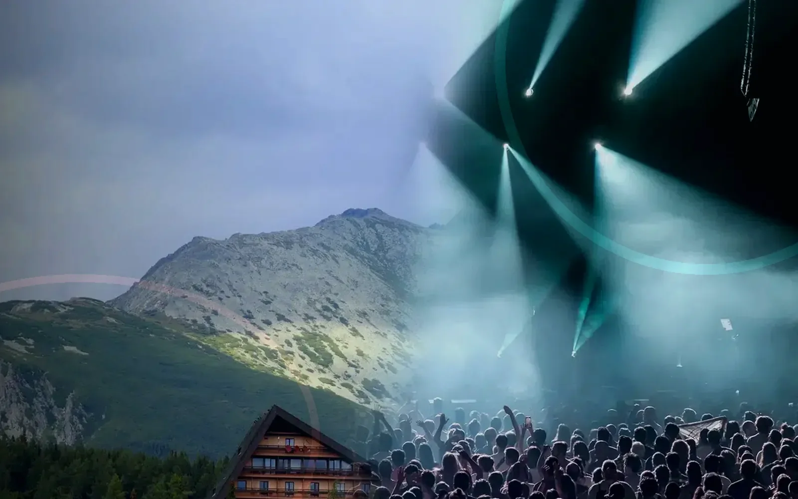

No. This website covers physical pokerrooms and in-person tournaments only. It does not offer online poker, gaming accounts, deposits, balances or remote play.

New Zealand physical pokerroom guide
Questions about physical poker visits
Straight answers about in-person tournaments, venue broadcasts, registration requests and responsible participation.
QUESTIONS
Clear answers before you travel
A request can be submitted only after a verified event and lawful venue process are connected. A request is not final until the venue confirms it.
No. A broadcast can only show an authorised physical tournament. Viewers cannot join a table through the video player.
Bring valid valid photo identification. The minimum legal age depends on the New Zealand law and the venue licence and the venue licence.
Use the confirmed arrival time shown on the event page. Unverified timings are never displayed.
Verified parking, public transport, taxi and accessible-arrival information will appear on the Visit page.
No unverified buy-in, fee or prize information is published. Confirmed conditions must come from the lawful venue operator.
The Rules page explains general visitor conduct. Event-specific rules only appear after verification.
INFORMATION REQUEST
Ask about a physical venue visit
This form does not create a gaming account or confirm a tournament seat.